Here I try to present one way of thinking about the Dirac String Trick. This way of thinking about the motion makes it easy to program.
The Dirac String Trick motion always for the rotation of a central ball (which has outward radial strings attached to its surface) such that the strings do not get twisted or tangled up. After 2 rotations about the axis of rotation the strings return to their orignial positions, again, without any twists.
It has been suggested that this motion may have something to do with the spin of a particle (like the electron or proton). See for example the paper "Geometric Model for Fundamental Particles" by Batty-Pratt and Racey, International Journal of Theoretical Physics, Vol. 19, No. 6, 1980.
See also my other web pages on this subject at Spherical Rotations
Here is a simple animation of the motion.
There are two small dots (spheres), one red and one white, which follow different strings (orange) around the center sphere.
Note that while the white sphere goes around only once, the red sphere goes around twice. This illustrates that the central sphere is rotating twice to return the strings to their initial positions.The way I like to think of this motion is to image concentric cones (or funnels), each with a slightly different pitch (some almost closed, others, more open, some almost flat, etc.)
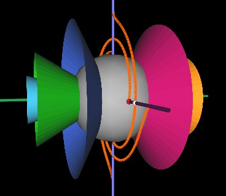 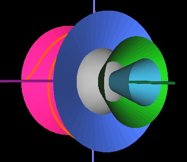
At any one point in time, a string is confined to the surface of a cone. The string is wrapped around the cone's surface, completing 180° roatation around the cone from the rim of the cone inward to the surface of the sphere.
In the next increament of time, the concentric layers of cones rotate (about the axis of rotation of the sphere). All the starting points of the strings are now on the rims of different cones. A sting is confined to the new cone's surface and complete 180° wrapping around the cone.
As this structure of cones rotates around, the strings appear to do a complicated motion. But it is a simple motion of wrapping themselfs around the surface of the cone which has its rim at the sting's starting point.
The next Figure shows the cones rotated slightly.
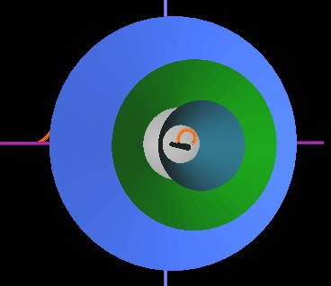
And here, the cones have rotated so that the first cone's rim is at the starting point of the string. Note how the string (orange) is confined to the blue cone's surface as it wraps around the string.
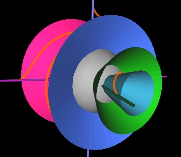
The cones have now (next Figure) rotated so that the green cone's rim is at the string's starting point. The string again wraps around the cone by 180° but since this (green) cone is more "open" than the previous (blue) cone, the string has to bend and stretch differently. It is this bending and stretching that makes the strings' motion look complicated. But now you know it is very simple.
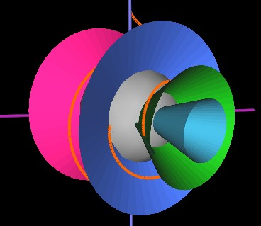
In the next Figure, the cones have rotated such that the rim of the more open blue cone is at the starting point of the string.
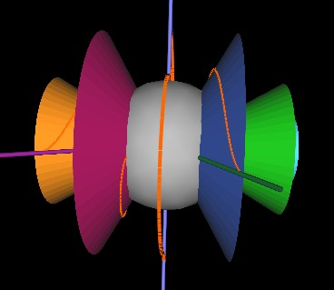
Here, the string is in a plane (no cone shown) with other strings. The cone in this case would be maximum open (flat).
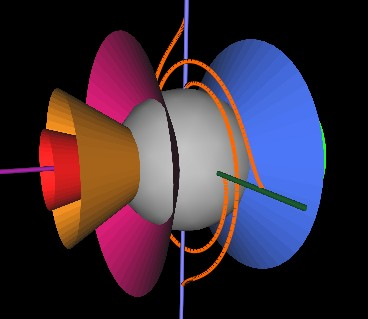
As the cones continue to rotate, the string next encounters (in our Fugires) the redish-pink cone.
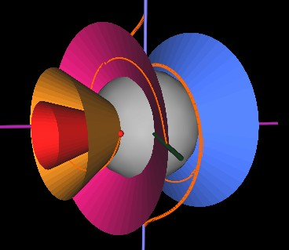
Then the orange and red cones.
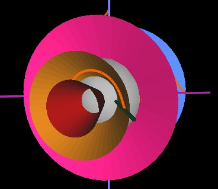 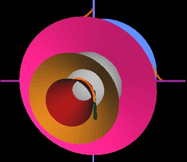
Note that in the about Figure where the string is wrapped around the red cone, the string is wrapped in a counter-clockwise direction. As the cones continue to rotate, the starting point of the string again encounters the rim of the red cone, but this time at the left side of the cone. Whereas in the previous Figure, the string seems to be going "up and around", now it seems to be going "down and around". This is how the strings appear to wrap "up and over" the center sphere through half of the cycle and then "down and under" through the other half of the cycle.
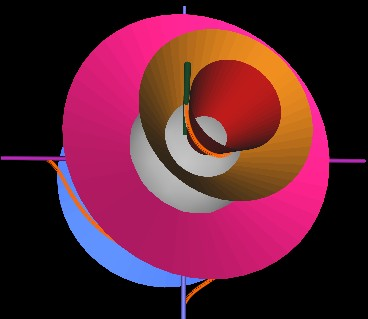
And so on through the rest of the cycle (the rest of the rotation of all the cones.)
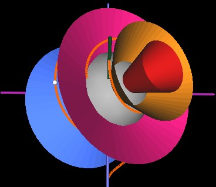 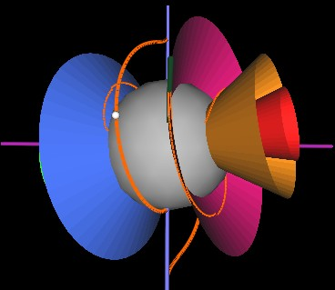
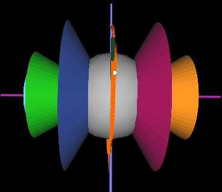 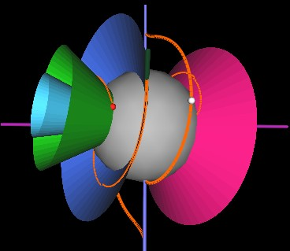
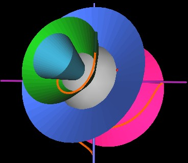 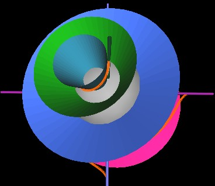
Although confusing to watch, here is an animation of the cone structure rotating.
Note that I have only shown a few cones in these animations. Actually, think of a dense packing, or continuous packing of concentric cones so that there is no gap between one cone an another. That is how the stings' smooth motion is derived.
With this construct of cones in mind and with the cone structure simply rotating around the rotation axis, it is easy to program any one strings motion.
Usage Note: My work is copyrighted. You may reference and use my work in non-profit projects but you may not include my work, or parts of it, in any for-profit project without my consent.